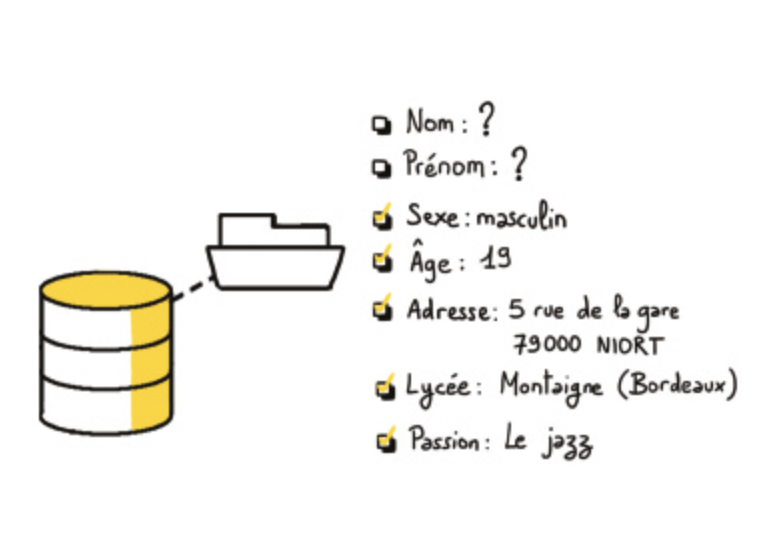
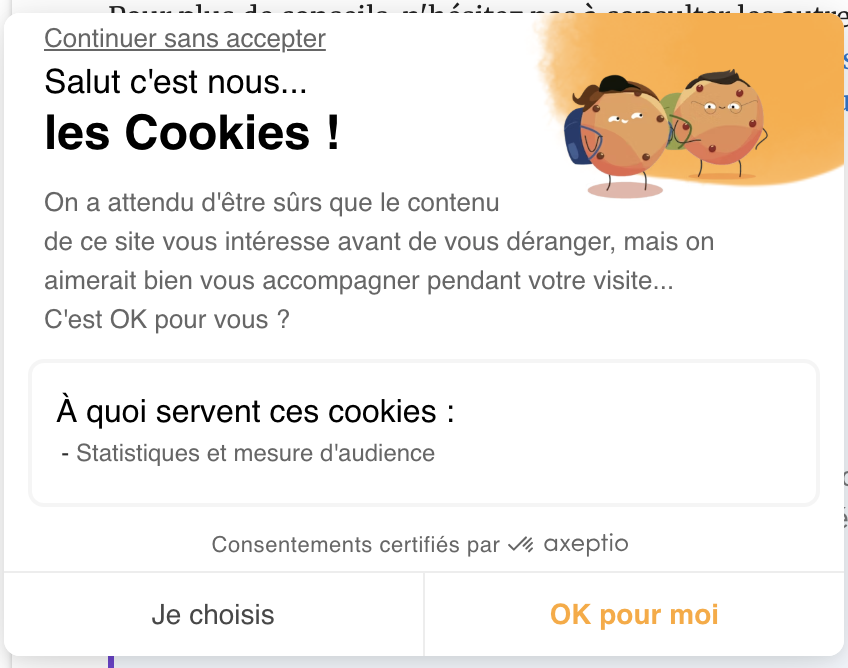
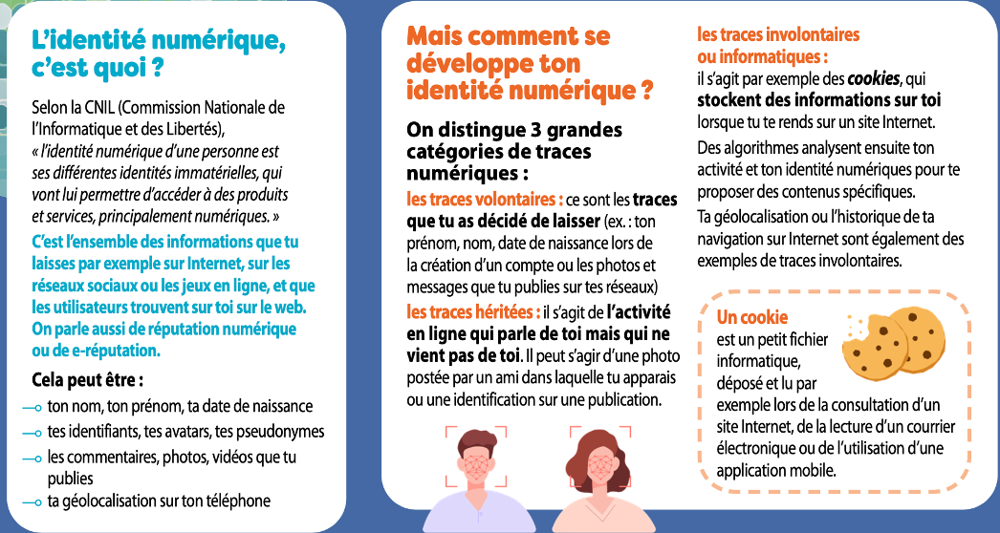
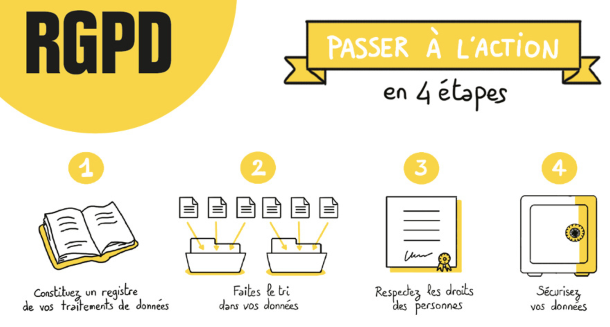

donnees personnelles
- culture numer Donnees personnelles: Lien
- competences Problemes liés à l’exploitation des données personnelles: Lien
- competences TP (recherche doc): Protection contre l’exploitation des données personnelles Lien
- modelisation Format de donnees: Lien
Données à caractère personnel
culture numerUne donnée à caractère personnel est une information sur une personne.
Parmi les données suivantes, certaines peuvent être classées comme relevant de:
- l’identité numérique
- identité administrative
- indirectement nominative (qui donne l’identite de la personne, une fois effectué un recoupement d’informations)
Ce sont:
- Le nom, le prenom, l’adresse
- un pseudo, un mot de passe
- une adresse IP
- des lieux visités et géolocalisés
- un panier d’achat
- des clés de recherche sur internet
- numero de carte bancaire
- numero NIR (securité sociale)
- données associées à son compte de reseau social (publications, like)
- Données exposée par d’autres mais nous identifiant dans un reseau social
- ordonance médicale, clichés radiographiques, …
- L’enregistrement de la voix de clients ou salariés par un dispositif informatique
- images de personnes physiques captées par un système de vidéosurveillance
- les conversations (par le microphone)
- le patrimoine d’un propriétaire
- …
Même des données supposées anonymes peuvent nous identifier car il existe souvent une clé de correspondance qui peut nous identifier.
Identité numérique
L’identité est construite à partir de données à caractère personnel.
- L’exercice du droit d’une personne passe par la justification de l’identité administrative de la personne (nom, prenom, date de naissance, etc…).

Infographie du RGPD - site de la CNIL
- Identité sur le net: Sur internet, la majorité des utilisateurs ne communiquent pas leur identité administrative. Ils donnent un pseudo, un mot de passe, un email. Le site associe souvent leur adresse IP à ces données. Ce qui constitue aussi une identité numérique.
Comment sont collectées nos données personnelles
(voir activité p 16 du livre SNT)
Les données nous concernant peuvent être cédées de manière:
- volontaires, directement: à partir d’un formulaire à remplir
- involontaires, indirectement: dans les metadonnées des photos de ma galerie, à partir du gps de mon tel, de mon activité sur le net, de mes amis sur le net, de mon profil social sur les reseaux, …
Pour utiliser des services sur le net, on doit en contrepartie donner son accord pour partager certaines de nos données.
Lorsque l’on installe une application, un logiciel, un driver pour un objet connecté, on est souvent obligé d’accepter le contrat sur les Conditions Générales d’Utilisation (CGU).
De même, pour accéder à la plupart des sites d’information, on est obligé d’accepter en grande partie les cookies du site, qui vont enregistrer et partager certaines de nos données.

Les données nous concernant peuvent aussi être cédées de manière:
- héritée: c’est lorsque ce sont d’autres personnes qui parlent de nous, ou publient des photos de nous, sur le net.
Pour résumer:

extrait d'une affiche sur le site de la CNIL
Traitement des données
Definition
il s’agit de toute opération effectuée de manière automatisée appliqué à des données à caractère personnel.
Par recoupement de plusieurs informations (publications, enregistrement par des dispositifs matériels, camera ou autre…), un algorithme peut déduire des informations sur ma personnalité, quelles sont mes préférences en terme de:
- religion
- sexualité
- politique
Un ordinateur, ou bien une personne qui a accès à certaines données indirectes qui me concernent, peut retrouver mon identité.
extrait de l'Ep2 S04, recherche dans la base de données d'une boutique de location de films
Enjeux pour l’usager
Aujourd’hui, l’aspiration des individus, en termes de protection de leur vie privée est de pouvoir utiliser les services technologiques d’internet, de s’exposer personnellement (reseaux sociaux), tout en cédant une partie acceptable de leurs données personnelles. Cette part cédée doit rester raisonnable et être négociée par contrat avec les opérateurs économiques.
Le RGPD (Réglement Général pour la Protection de Données)
Définition
C’est un document qui donne un cadre légal à l’utilisation des données dans l’UE et contraint les organismes publics ou privés à certaines obligations.
Ce texte vise à définir des équilibres: protection des individus d’une part, utilisation des données à des fins commerciales ou pour des missions d’intérêt public, d’autre part.
Le RGPD n’interdit PAS l’utilisation commerciale des données.
Mais il fournit un cadre, auquel les entreprises privées, comme les administrations publiques doivent se conformer.
Obligations de conformité vis à vis du RGPD
Pour les entreprises et administrations, susceptible de TRAITER des données à caractère personnel:
- devoir de tenir un registre des activités de traitement (finalités, délai de conservation et de suppression automatique, réalisation d’atude d’impact…)
- obligation d’assurer une collecte lisible et transparente des données
- protéger les données. Assure leur sécurité et leur confidentialité
- définir un paramètre: Rester minimal dans la quantité de données et le type de données collectées
- interdiction de collecter certaines catégories particulières de données (origines raciale ou ethnique, opinions politiques, convictions religieuses, appartenance syndicale)
- interdiction de collecter le numero NIR (securité sociale) car celui-ci contient un certain nombre de caractéristiques qui aident au chainage des données
- interdiction de collecter des données génétiques, biométriques, concerant la santé, la vie et l’orientation sexuelle.
Droit des personnes vis à vis du RGPD
Tout individu doit:
- pouvoir être questionné pour demander son consentement préalable à la collecte et l’utilisation de ses données.
- être informé sur la finalité du traitement qui sera effectué
- dans le cas d’une collecte indirecte: être informé de la source de cette collecte, et droit de recours auprès de la CNIL
- avoir droit d’accès, de rectification et de portabilité des données (c’est à dire, droit à obtenir ses données collectées dans un format structuré, lisible)
- avoir droit d’effacement
- avoir droit d’opposition au traitement des données à visée commerciale et de profilage
- avoir des droits concernant les cookies, exploitant ses traces de navigation. Côté client, ces cookies sont stokées dans le navigateur web. L’individu doit donner son consentement sur leur utilisation, à partir d’une information claire et complète
- avoir droit au deferencement: demander la suppression de liens vers des informations portant atteinte à la vie privée.
Remarques:
- Il existe également un tracking côté serveur. Le client n’est alors pas en mesure d’effacer ses traces numériques, qui sont partagées le plus souvent avec des entreprises tierces (revente des données). Dans la chaine de partage des données, tout le monde est alors responsable du traitement qui sera effectué sur ces données.
- De nombreux exemples montrent des manquements à ces règles sur la protection des données et leurs conséquences: L’affaire Facebook pendant l’élection américaine, qui a vu gagner le président Trump en est un tristement célèbre, même si cela ne concernait pas le territoire d’influence de la CNIL et de son équivalent européen. Au niveau fançais: les affaires Foncia, Acadomia…
La CNIL
Definition
Commission Nationale pour l’informatique et les libertés. La CNIL est la premiere autorité administrative instaurée en France (1978) à la faveur de l’adoption de la loi “informatique et libertés”.
Les actions de la CNIL
La CNIL exerce un pouvoir de contrôle et de sanctions pour la protection des données. Elle est indépendante et ne reçoit d’instruction d’aucune autorité publique.
Tout citoyen peut s’adresser à la CNIL pour la saisir d’une plainte.
La CNIL réalise des:
- controles d’audit, qui sont programmés, sur des organismes privés comme publics.
- contrôles de contentieux à partir de plaintes, de dénonciations anonyme ou de tout autre moyen qui lui aurait permi de prendre connaissance d’un manquement au RGPD.
La CNIL fait en sorte que l’usage qui est fait des données personnelles ne porte pas atteinte à la liberté des individus.
Sanctions prises
Lors d’un manquement avéré, la CNIL peut:
- faire suspendre les flux de données adressés à un destinataire
- prendre des sanctions pécunières
- prendre des sanctions d’image: publication sur le site de la CNIL et dans le Journal Officiel. Les répercussions peuvent être importantes (risque réputationnel)
Traces numériques et marketing ciblé
Après 1978, c’est la valeur commerciale des données personnelles qui va commencer à aiguiser l’appetit d’opérateurs économiques: l’émergence d’une économie fondée sur la connaissance du client. Ce qui va intensifier la collecte de données à caractère personnel et amener à un marketing ciblé.
C’est la convergence technologique et la traçabilité qui permet d’intensifier cette collecte indirecte de nos données: des cartes à puces, cartes de fidélité client, videosurveillance, données de connexion aux réseaux numériques, moyens de paiement (cartes bancaires ou autre types de paiement numériques). On est passé d’une problématique de fichier à une problématiques de traces numériques.
Le RGPD (Le règlement général sur la protection des données)
mai 2018
C’est un document qui donne un cadre légal à l’utilisation des données dans l’UE et contraint les organismes publics ou privés à certaines obligations. C’est un texte plus général que celui sur la loi informatique et libertés.

Le RGPD - affiche de la CNIL
- La collecte de données doit servir l’objectif prévu. Ne collecter que celles nécessaires.
- Les personnes doivent être clairement informés de l’utilisation qui sera faite de leurs données. Ce traitement n’est pas forcement informatisé. Mais tout traitement de données rentre dans le cadre du RGPD.
- permettre aux personnes d’exercer leurs droits sur ces données.
- Sécuriser ces données.
Violation de données et incidents de sécurité
Malgré toutes les mesures de sécurité mises en oeuvre, les violations et incidents peuvent survenir. En vertu du RGPD, les entreprises et administrations sont tenues d’informer l’autorité de contrôle (CNIL), ainsi que les individus concernés par le vol de données personnelles.
Ainsi, en 2024, les données de santé de 33 millions de français stockées pour le tiers payant (Aimerys) ont été hackées par des malfaiteurs. Elles ont pu être reversées dans le dark web, et contribuer à créer de fausses identités.
Mais, encore plus préoccupant, ce sont les données rendues publiques par les internautes, sur des sites internet, reseaux et applications sur leur smartphone qui sont les plus faciles à dérober.
Les reseaux sociaux et les clouds gratuits exploitent grandement ces données, qu’ils collectent massivement.
paramétrer son smartphone pour éviter la fuite de ses données
Il est essentiel de connaitre les risques et d’adopter une attitude modérée lorsque l’on utilise ces outils.
Vie privée et traces numériques, persistance sur le net
Comme vos données sont personnelles, elles vous concernent et vous devez en avoir la maitrise.
Conserver des secrets sur sa vie privée est relativement difficile lorsque l’on s’expose sur internet.
Le format numérique des données va faciliter leur échange, leur multiplication, … et leur persistance sur le web.
Il est souhaitable d’avoir un compte privé sur les réseaux sociaux, et de diffuser le moins d’informations possibles. Mais les algorithmes utilisés par les réseaux sociaux vont chercher à déduire des informations à partir d’indices:
Votre activité sur les reseaux sociaux
Les personnes que vous suivez, les pages que vous likez, … sont autant d’informations pour établir votre profil par recoupement d’information.
Données de Géolocalisation
Il s’agit d’un exemple de données personnelles indirectement nominatives. Celles-ci contribuent aussi à fournir une information sur la personne (habitude, travail, consultation de médecin)…

Données personnelles, Google vous suit à la trace - FranceTV info
Il existe cependant quelques gestes et attitudes qui peuvent limiter nos traces numériques, ainsi que la confidentialité des données que l’on échange.
Questions-reponses
une entreprise peut-elle être tenue responsable du vol des données de ses clients?
Q/R issu du site europe-consommateurs.eu Lorsque vous acceptez la collecte, transfert, sauvegarde, utilisation de vos données par un professionnel:
Doit-on vous informer de l’utilisation qui est faite de vos données ?
Oui. Vous avez le droit de savoir si vos données sont collectées, transférées, sauvegardées, modifiées…
Vous devez également être informé, entre autres, :
- de l’identité du responsable de la collecte de vos données.
- des finalités de cette collecte.
- des destinataires de vos données.
- de la durée de conservation de vos données.
- de votre droit d’introduire une réclamation auprès d’une autorité de contrôle.
Les entreprises américaines comme Uber ou Amazon, …, doivent-elles se conformer au RGPD?
Oui car le RGPD est un texte de loi qui protège les citoyens européens (pour leurs données personnelles), même ci ceux-ci utilisent des services proposés par des entreprises hors UE, dès lors qu’elles ciblent des usagers européens.
Comment protéger mes données lors d’un achat en ligne ?
Assurez-vous que vous payez votre commande sur un site utilisant une connexion sécurisée. L’adresse du site doit commencer par « https:// » et un cadenas fermé doit apparaitre.
Pour éviter le piratage de vos données bancaires, vous pouvez privilégier l’utilisation d’une carte bancaire à usage unique.
Un site marchand européen a-t-il le droit de garder mes coordonnées bancaires pour faciliter mes futurs achats ?
Oui mais seulement si vous y avez consenti expressément en cochant une case. Accepter simplement les conditions générales de vente ou passer par une case pré-cochée ne suffit pas.
Vous pouvez à tout moment contacter le professionnel afin de demander la suppression de vos données bancaires.
Comment protéger mes données sur les réseaux sociaux ?
Pour protéger votre vie privée, paramétrez l’accès à vos photos et à votre profil. Vérifiez régulièrement le paramétrage de confidentialité de votre compte.
Evitez de répondre aux questions de géolocalisation si cela n’est pas indispensable. Surtout, ne répondez pas aux messages adressés par des individus que vous ne connaissez pas.
Laissez également le strict minimum concernant vos coordonnées et évitez d’y détailler votre vie privée, pour rester à l’abri de personnes malintentionnées.
Un réseau social basé en Europe refuse de me donner accès à mes données personnelles. Vers qui dois-je me retourner ?
Si vous résidez en France, vous pouvez adresser une plainte à la Commission Nationale Informatique et Libertés (CNIL) en cas de violation de vos droits. La CNIL se chargera d’en informer l’autorité chef de file. Il s’agit de l’autorité nationale de protection des données personnelles du pays dans lequel le professionnel/le réseau social est établi.
Je n’utilise plus mon compte sur un réseau social, mes données sont-elles supprimées ?
Non pas automatiquement. Ce n’est pas parce que vous ne vous êtes pas connecté à votre compte sur un réseau social depuis plusieurs années qu’il a supprimé vos données personnelles et ne les exploite plus. Renseignez-vous bien quant au devenir du compte que vous n’utilisez plus sur un réseau social.
Les autorités de protection des données personnelles dans l’Union européenne recommandent aux différents réseaux sociaux de supprimer les comptes restés inactifs pendant une certaine période mais ces recommandations ne sont pas toujours respectées.
Veillez donc à supprimer votre compte.
Mon enfant de 14 ans peut-il s’inscrire seul et confier ses données à un réseau social ou un jeu en ligne ?
Pas sans votre consentement car la majorité numérique en France est à 15 ans. En Europe, le RGPD a laissé le soin à chaque pays de fixer sa « majorité numérique » qui doit être entre 13 et 16 ans.
Peut-on m’imposer de recevoir des publicités pour valider ma participation à un jeu concours ?
Non. Aucune jeu concours ne peut conditionner votre participation au fait que vous acceptiez de recevoir une prospection commerciale, ou de communiquer vos coordonnées à des partenaires de l’organisateur du jeu. Vous devez pouvoir participer au jeu concours de manière libre. De la même manière, l’organisateur du jeu ne peut prévoir de vous accorder des chances supplémentaires au tirage au sort du jeu concours à condition que vous acceptiez de recevoir une prospection commerciale.
Les informations recueillies ne peuvent être utilisées que dans le cadre du jeu et de la remise du lot en cas de gain, sauf si vous avez consenti à recevoir de la prospection.
Le site Internet du restaurant-livreur de pizza, sur lequel vous avez renseigné des données personnelles est victime de hacking. Est-ce grave ? Doit-il informer ses clients ? Est-il responsable de l’usage qui sera fait de ces données ?
Vous pouvez contactez la CNIL et cybermalveillance.gouv.fr, même si en principe l’entreprise doit effectuer la démarche. Demandez à l’entreprise des informations détaillées sur l’incident : date et contexte exact, origine de l’attaque, quelles données le hacker a-t-il exactement dérobées (identité, coordonnées, informations financières, numéro de sécurité sociale…) ? Quels documents a-t-il récupérés (copie de la carte d’identité, des fiches de salaires, justificatifs bancaires….) ? Est-ce que l’entreprise victime a bien fait une déclaration à la CNIL ? Réagissez à temps, afin d’anticiper une potentielle usurpation d’identité via les données volées !
Compléments et activités
- Se proteger de la collecte des données (videos/TD): Lien
- TP protection des données (SNT): Lien
- Activité complète (PPPE): competences numeriques > protection des données
- Article caminteresse: qui exploite nos données?